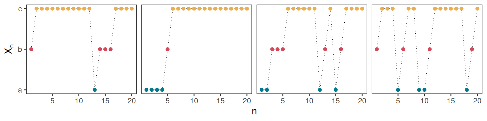
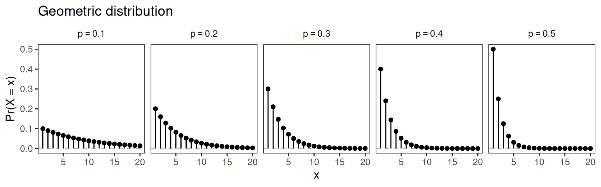
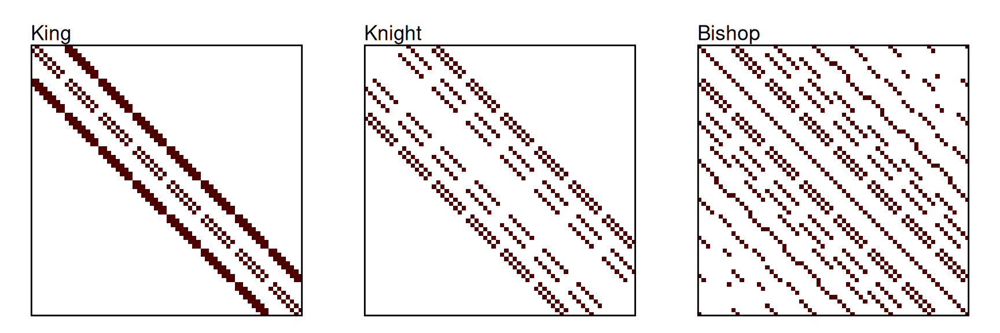
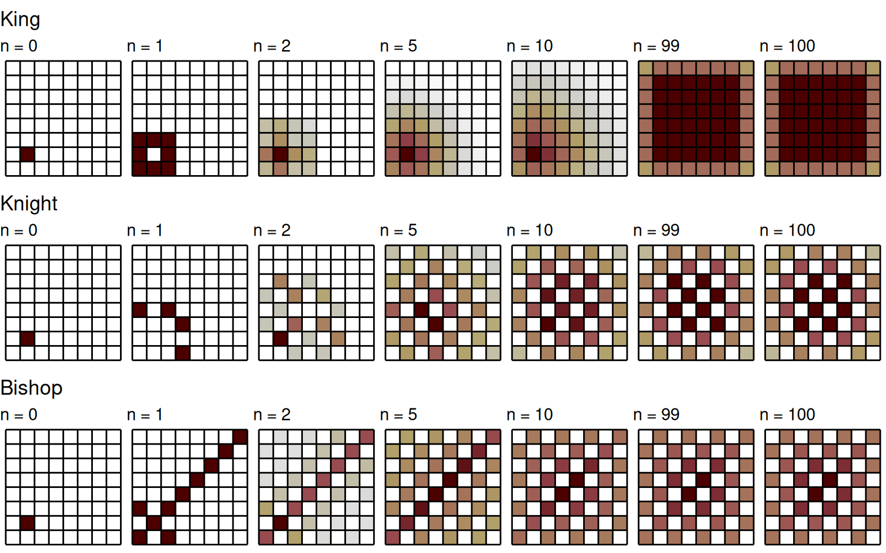
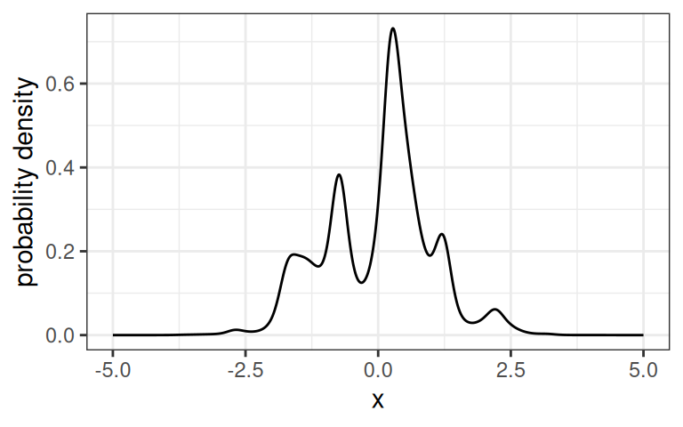
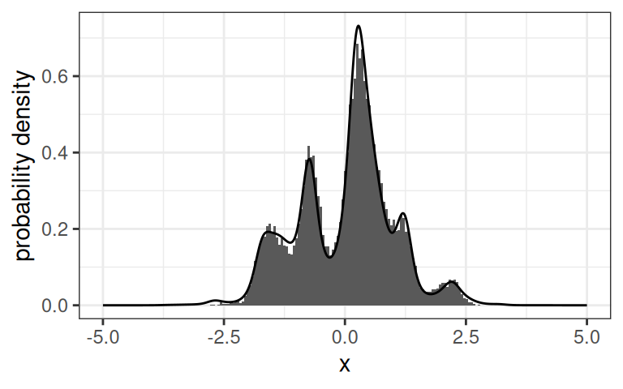

graph LR; a((a)) -->|0.5| b((b)) a -->|0.5| a b -->|0.7| c((c)) b -->|0.3| b c -->|0.9| c c -->|0.1| a
2 Discrete-time Markov processes
We first consider the case of a discrete-time stochastic process \((X_n)_{n \in \mathbb{N}}\), defined over a countable state space \(\mathcal{S}\) (i.e., \(X_n \in \mathcal{S}\)). In this chapter, we denote the time index \(n\) rather than \(t\) as a reminder that time is discrete. We will later cover the case of an uncountable state space (Section 2.6), and continuous-time processes (Chapter 4).
2.1 Introduction
A key feature of a stochastic process is its dependence structure, i.e., how successive values of the process depend on each other. The simplest assumption would be that the \(X_n\) are independent random variables, but this is an unrealistic premise in many situations. The next simplest assumption would be that \(X_{n+1}\) is dependent on \(X_n\), but not on previous values of the process (at least, not conditional on \(X_n\)). This is called the Markov assumption, and we will see that it captures the dependence of many real-world processes, despite its apparent simplicity.
2.1.1 Definition
There are several ways we could describe this property in words:
- \(X_n\) contains all the information we need about the history of the process to determine the distribution of \(X_{n+1}\);
- the future is independent of the past, conditionally on the present;
- the process has no memory (the Markov property is sometimes called “memorylessness”).
By abuse of language, the Markov property is sometimes described by saying that \(X_{n+1}\) only depends on \(X_n\) and not on previous values of the process (\(X_{n-1}, X_{n-2}, \dots\)). Note that, in this version, there is no explicit mention of the conditional nature of this statement. If we do not condition on \(X_t\), then \(X_{n+1}\) is in fact dependent on \(X_{n-1}\), as will become clearer later.
We often use the word “state” when describing Markov processes, and it can refer to two things:
- the state of the process at time \(n\) is its value \(X_n\);
- the states of the process are elements of its state space (e.g., “sunny” and “cloudy” in the weather example).
We can then rephrase the Markov property as: the state of the process at time \(n+1\) is independent of its state at time \(n-1\) (and before), conditional on its state at time \(n\).
In the definition of a Markov process that we gave above, the process is assumed to be defined over a countable set \(\mathcal{S}\). An important special case is when \(\mathcal{S}\) is finite, i.e., the process can take on a finite number of values. In such a case, we sometimes refer to a \(N\)-state Markov process for a process defined over a set of size \(N\). For Markov processes over countable (finite or infinite) sets, it is often convenient to denote the state space using the integers, e.g., \(\mathcal{S} = \{ 0, 1, 2 \}\) or \(\mathcal{S} = \mathbb{Z}\). Despite this notation, it is important to remember that, in many applications, the states are qualitative rather than quantitative, and the integers are merely indices to distinguish them. We can also sometimes label the states using letters or some other symbols to make this more explicit.
Due to the Markov property, the dynamics of a Markov process with countable state space can be specified in terms of the probabilities of moving between any two states over one time interval, given by \(\Pr(X_{n + 1} = j \mid X_{n} = i)\) for any \(i, j \in \mathcal{S}\). If the state space is of finite size \(\vert \mathcal{S}\vert = N\), there are \(N^2\) such probabilities.
Remark: The transition probabilities are subject to the following constraints.
- \(P_{ij} \in [0, 1]\), for any \(i, j \in \mathcal{S}\)
- \(\displaystyle \sum_{j \in \mathcal{S}} P_{ij} = 1\), for any \(i \in \mathcal{S}\)
The first point follows from the definition of probabilities, and the second point reflects the necessity that \(X_{n+1} \in \mathcal{S}\) (i.e., there must be a \(j \in \mathcal{S}\) for which \(X_{n+1} = j\)). A square matrix whose entries satisfy those two conditions is called a stochastic matrix (or sometimes a “right” stochastic matrix). Each row of a stochastic matrix is a (discrete) probability distribution.
If the state space of the Markov chain is finite, i.e., \(\vert \mathcal{S} \vert = N < \infty\), then the transition probability matrix is an \(N \times N\) matrix. In the case of an countable infinite state space, however, the matrix is infinite (i.e., it has an infinite number of rows and columns). Although this seems to complicate things, most matrix operations are still well defined for infinite matrices, and the results described below hold for any countable state space. In practice, the main challenge associated with the infinite state space is that we cannot write out the full matrix, either by hand or to store it in a computer.
In this chapter, we will assume that the transition probabilities do not depend on the time step \(n\), i.e., they are constant through time.
It is common to represent a Markov chain as a transition graph, with one node for each state, and arrows showing all possible transitions. This can be viewed as a weighted graph, where the weight of each edge is the corresponding transition probability.
Example: Consider the 3-state Markov chain with transition probability matrix \[ \boldsymbol{P} = \begin{pmatrix} 0.5 & 0.5 & 0 \\ 0 & 0.3 & 0.7 \\ 0.1 & 0 & 0.9 \end{pmatrix} \]
If we label the three states as “a”, “b”, and “c”, we can represent the transition structure of the process as shown in Figure fig-markov-graph.
A realisation from a Markov chain is a sequence of states for some set of time indices. For example, (a, a, b, c, c, c, c, c, c, a) is one possible realisation of the 3-state Markov chain shown in Figure fig-markov-graph over 10 time steps. We can display those as time series graphs, with time along the \(x\) axis and state along the \(y\) axis, as long as we remember that the ordering of the states is often arbitrary. Four example realisations from the Markov chain of Figure fig-markov-graph are shown in Figure fig-markov-sim.

Figure fig-markov-sim makes it clear that, if we don’t condition on \(X_n\), then \(X_{n+1}\) is dependent on previous states. For example, if all we know is that \(X_{n-1} = \text{c}\) (and we don’t know \(X_n\)), this still gives us quite a bit of information about \(X_{n+1}\). In this example, we know that \(X_{n+1}\) is most likely to also be c, because the process tends to stay in that state for many consecutive time steps.
2.1.2 Holding times
One way to understand the Markov assumption, and whether it is violated in a given context, is to think about how long the process spends in a given state (before switching to another state). Let \(D_i\) denote the number of consecutive time steps spent in state \(i\), called the holding time (or dwell time). The event \(D_i = 1\) corresponds to the situation where the process switches out of state \(i\) in the first time step, which has probability \(1 - P_{ii}\) (i.e., one minus the probability of remaining in state \(i\)). The event \(D_i = 2\) requires remaining in state \(i\) in the first time step (with probability \(P_{ii}\)) and switching out of state \(i\) in the second time step (with probability \(1 - P_{ii}\)), so it has probability \(P_{ii} (1 - P_{ii})\). We can repeat this reasoning to find the general formula: \[ \Pr(D_i = k) = P_{ii}^{k-1} (1 - P_{ii}), \] because \(D_i = k\) means that the process remained in state \(i\) for \(k - 1\) time steps, and then switched to another state.
This is the probability mass function of the geometric distribution with parameter \(1 - P_{ii}\). Figure fig-geom-dist shows the graph of this function for different values of the probability parameter \(p = 1 - P_{ii}\). Although the decay rate of the distribution depends on the transition probability, its mode is always 1, i.e., the most likely holding time is 1 regardless of the transition probabilities.

The mean of the geometric distribution is the inverse of the probability parameter so, in the context of the Markov chain, \[ E[D_i] = \frac{1}{1 - \gamma_{ii}} \]
For example, the expected holding times for the Markov chain shown in Figure fig-markov-graph are \(E[D_1] = 1/(1 - 0.5) = 2\), \(E[D_2] = 1/(1 - 0.3) = 1.43\), and \(E[D_3] = 1/(1 - 0.9) = 10\). This is consistent with the patterns observed in the simulated realisations of Figure fig-markov-sim, where the process tends to spend much longer in state 3 than in states 1 and 2.
2.1.3 Higher-order dependence
The Markov property might seem like a strong assumption in many situations. After all, most real-world processes have very complex dependence structures. For example, tomorrow’s weather likely depends on more than just today’s weather. But it is important to remember that stochastic models, like any models, are only supposed to be an approximation. The Markov property turns out to be a pretty good approximation to many complex phenomena.
There are several ways to relax the Markov assumption while preserving some of the convenient mathematical properties of Markov chains.
Higher-order Markov processes might seem considerably more flexible than (first-order) Markov processes, but they are also harder to implement. Fortunately, they can be written as first-order Markov processes with an expanded state space, such that all results in this chapter can be applied to them directly. To convert a \(p\)-th order Markov chain into a first-order Markov chain, we can define the new state space to be the set of all possible sequences of \(p\) states (let’s call these new states “expanded states”). So, we will focus on first-order Markov processes, keeping in mind that they can be used very generally.
2.1.4 Simulating from a Markov process
Given an initial distribution and a transition probability matrix, we can simulate from a Markov chain by iteratively sampling from a categorical distribution, e.g., using the sample() function in R. The code chunk below shows an example simulation over 100 time steps, for a 3-state Markov chain with state space \(\mathcal{S} = \{ 0, 1, 2 \}\), initial distribution \[
\boldsymbol{u}^{(0)} = (0.2, 0.2, 0.4)
\] and transition probability matrix \[
\boldsymbol{P} =
\begin{pmatrix}
0.8 & 0.1 & 0.1 \\
0.3 & 0.7 & 0 \\
0 & 0.2 & 0.8
\end{pmatrix}
\]
This outputs one realisation from the process, and changing the random seed would yield a different realisation.
# Set random seed for reproducibility
set.seed(67)
# Define parameters
n <- 100
u0 <- c(0.2, 0.2, 0.4)
P <- matrix(c(0.8, 0.1, 0.1,
0.3, 0.7, 0,
0, 0.2, 0.8),
nrow = 3, byrow = TRUE)
# Initialise
X <- rep(NA, length = n)
X[1] <- sample(1:3, size = 1, prob = u0)
# Loop over time steps
for(i in 2:n) {
# Choose row of transition matrix based on previous state
P_row <- P[X[i-1],]
# Sample new state
X[i] <- sample(1:3, size = 1, prob = P_row)
}
# Minus 1 to get states {0, 1, 2} rather than {1, 2, 3}
X - 1 [1] 0 0 0 1 1 1 1 1 1 0 0 0 0 0 0 0 1 1 1 1 1 0 0 0 2 2 2 2 2 2 2 1 1 1 1 1 1
[38] 1 1 1 1 1 0 0 0 0 2 2 2 2 2 2 2 2 1 0 0 0 0 2 2 1 1 1 1 1 1 1 1 1 0 1 1 1
[75] 0 0 2 2 1 0 0 0 0 0 0 0 0 0 0 0 0 0 0 0 0 0 0 0 0 0Simulation is an extremely flexible and powerful tool in applied probability. In the rest of this chapter, we will describe many mathematical techniques to answer questions such as
how often does the chain visit state \(i\)?
if the chain starts in state \(i\), how long will it take on average to reach state \(j\)?
if the chain is in state \(i\) at time \(t = 0\), what is the probability that it will be in state \(j\) at time \(t = 10\)?
Approximate answers to all these questions, and many more, could be obtained based on simulated realisations of the process.
2.2 Looking into the future
The transition probabilities describe what happens to the process over one time interval. With this information, it seems that we should also be able to say something about the distribution of the process further into the future (although perhaps with less and less certainty).
2.2.1 Chapman-Kolmogorov Equations
Note that the transition probabilities that we defined previously are 1-step transition probabilities, i.e., we have \(\boldsymbol{P}^{(1)} = \boldsymbol{P}\) and \(P^{(1)}_{ij} = P_{ij}\). For any \(n\), the \(n\)-step transition probabilities can be derived from the \(1\)-step transition probabilities, and the Chapman-Kolmogorov equations provide this relationship.
In particular, we have \[ \begin{aligned} \boldsymbol{P}^{(2)} = \boldsymbol{P}^{(1)} \boldsymbol{P}^{(1)} = \boldsymbol{P}^{1} \boldsymbol{P}^{1} = \boldsymbol{P}^{2}, \\ \boldsymbol{P}^{(3)} = \boldsymbol{P}^{(2)} \boldsymbol{P}^{(1)} = \boldsymbol{P}^{2} \boldsymbol{P}^{1} = \boldsymbol{P}^{3}, \\ \end{aligned} \] and so on. By induction, we can prove the following result.
That is, the \(n\)-step transition probability matrix \(\boldsymbol{P}^{(n)}\) can be computed by multiplying the transition probability \(\boldsymbol{P}\) by itself \(n\) times.
Note that this does not imply that \(P_{ij}^{(n)} = P_{ij}^{n}\) for any \(i\) and \(j\). This is generally not the case, and the full matrix needs to be taken to the power of \(n\) to obtain \(P_{ij}^{(n)}\).
2.2.2 Marginal state distribution
The transition probabilities of the Markov chain define the conditional distribution of the state \(X_n\) given the state \(X_{n-1}\). In some cases, we are interested in the marginal distribution (i.e., unconditional distribution) of \(X_n\).
To derive the marginal distribution of \(X_n\), we must fix the initial distribution of the chain, \(\boldsymbol{u}^{(0)}\). In practice, we often know what the initial value of the process is, so the initial distribution is set to a vector where all but one entries are zero.
From this property, we can see that the Markov chain is fully specified by the initial distribution \(\boldsymbol{u}^{(0)}\) and the transition probability matrix \(\boldsymbol{P}\). That is, given those two parameters, the distribution of the chain can be computed at any time step \(n \geq 0\).
To illustrate the idea of marginal distribution, we use the Markov chain defined by random moves of a piece on a chess board. The state space of the process is the list of squares on the board, i.e., there are \(8 \times 8 = 64\) states, and the \(64 \times 64 = 4096\) transition probabilities are defined by the rules for the chosen piece. We assume that the piece is moved at each time step to any of the allowed squares with equal probability. For example, Figure fig-chess-tpm shows the transition probability matrices for a king and a knight.

Given the starting position of the piece, we can use the last proposition to compute its distribution on the board after one move, two moves, and so on. The distribution is a vector of the probabilities of being in the different squares of the board, which add up to 1. If we choose the square where the piece starts, the initial distribution is a vector of length 64, where 63 elements are set to zero (all except the starting position). Then, we iteratively multiply that vector by the transition probability matrix to obtain the subsequent distributions.

Figure fig-chess-dist shows the distributions of a king and a knight that start from some given square, and take an allowable move at random at each time step. The king has what we might call “diffusive” behaviour, and its distribution spreads over the board with time. After many time steps, it is almost equally likely to be in any of the non-edge squares of the board; the edge and corner squares are less likely because they are less connected. The distribution of the knight also spreads over the board with time, but it follows a different alternating pattern. This is because, due to its movement rules, a knight that’s on a black square has to move to a white square at the next time, whereas a knight that’s on a white square has to move to a black square. So, if the piece starts on a black square, all white squares have probability zero when \(n\) is even, and all black squares have probability zero when \(n\) is odd.
This example highlights several interesting phenomena that we will study in more detail in later sections. In particular, it seems like there is a key difference in the long-term behaviour of the Markov chain for the king and the knight: the distribution of the king stabilises as \(n\) grows, whereas the distribution of the knight does not.
2.3 First step analysis
It is common to seek the probability that a Markov chain will ever reach a given state (or set of states), and the expected time it will take to get there. These quantities are called hitting probability and expected hitting time, respectively, and this area is called first step analysis. We will see that these can be found by solving linear equations involving the transition probabilities.
For example, looking at the transition graph below, we might wonder whether, starting from state 2, it is more likely that the process will eventually get stuck in 4 or in \(\{ 0, 1 \}\). Or how long we might expect it will take.
graph LR 0((0)) -->|1| 1((1)) 1 -->|1| 0 2((2)) -->|1/3| 0 2 -->|1/3| 1 2 -->|1/3| 3((3)) 3 -->|1/2| 2 3 -->|1/2| 4((4)) 4 -->|1| 4
A related concept is the first return time, which is the first non-zero time at which a state (or set of states) is visited by the chain.
The hitting probability is sometimes obviously 1; for example, in a Markov chain over \(\{ 0, 1 \}\) where all transitions have non-zero probability, the probability of eventually visiting state 1 given we start in 0 is 1. In other cases, it is obviously 0, when there are no possible sequence of transitions leading from state \(i\) to \(A\).
First step analysis is often used to study systems with absorbing classes, i.e., sets of states where the process can get “stuck”. Figure fig-markov-firststep shows an example Markov chain with two absorbing classes: \(\{ 0, 1 \}\) and \(\{ 4 \}\). Starting in state 2 or 3, it is non-trivial to determine the probability of ever visiting state 4, say.
We use the following property to compute hitting probabilities.
This proof helps us understand why this is called “first step analysis”: to find the hitting probabilities, we condition on the first step (i.e., on \(X_1\)) and apply the law of total probability.
We now turn to the mean (or expected) hitting times, which can also be computed conveniently through a system of linear equations.
2.4 Interstate travel
To describe the long-term behaviour of a Markov chain, we need to understand how states are related, i.e., how often the process travels from one state to another (not just over one time interval). In this section, we introduce several definitions that will become important in the next section to decide how the distribution of a given Markov chain evolves in the long run.
2.4.1 Communication and reducibility
The relation of communication satisfies the following three properties.
Reflexivity: Every state communicates with itself.
Symmetry: If state \(i\) communicates with state \(j\), then \(j\) communicates with \(i\).
Transitivity: If state \(i\) communicates with state \(j\), and state \(j\) communicates with state \(k\), then \(i\) communicates with \(k\).
A binary relation that satisfies these three properties is called an equivalence relation, and it can be used to divide the state space into equivalence classes.
The transition graph of a Markov process can be used to identify communicating classes.
Example: Figure fig-markov-communication shows a 5-state Markov process with states {A, B, C, D, E}, where the transition probability matrix is \[ \boldsymbol{P} = \begin{pmatrix} 0 & 1 & 0 & 0 & 0\\ 0 & 0 & 1 & 0 & 0\\ 0.5 & 0 & 0 & 0 & 0.5\\ 0 & 0 & 0 & 0 & 1\\ 0 & 0 & 0 & 1 & 0\\ \end{pmatrix} \]
This Markov process has two communicating classes: {A, B, C} and {D, E}. A and E are not in the same class because, while it is possible to travel from A to E (through B and C), it is not possible to travel from E to A.
graph LR A((A)) --> B((B)) B --> C((C)) C --> A D((D)) --> E((E)) E --> D C --> E
We will often focus on irreducible Markov chains later, when we study their long-term behaviour. It is a little more complicated to think about it for reducible processes, where we have to figure out which class the process will get stuck in (e.g., {E, D} in Figure fig-markov-communication), how long we can expect it will take to get stuck there, and so on. These are also problems that have been studied, but we will not cover them in this course.
A state \(i \in \mathcal{S}\) is called an absorbing state if \(P_{ii} = 1\), i.e., if the process that has reached \(i\) can never leave. If a Markov chain has an absorbing state, then it is not irreducible, because it is not possible to travel from the absorbing state to any other state. For example, we can represent the board game Snakes and Ladders as a Markov chain, in which the final square is an absorbing state (because the player stays there once they’ve reached it).
2.4.2 Transience and recurrence
We may want to know whether, starting in a given state, the process will ever return to it. We define the first return time in state \(i\) as the first positive time at which the state is visited by the chain; that is, we define \(\rho_i = \min \{\, n \geq 1 : X_n = i \,\}\), and set \(\rho_i = \infty\) if \(X_n \neq i\) for all \(n \geq 1\). Further, let \(h_i\) be the return probability, i.e., the probability that, starting in state \(i\), the chain will ever return to state \(i\), i.e., \[ h_i = \Pr(\rho_i < \infty \mid X_0 = i). \]
Note that these terms are slightly different from those used in first step analysis: the first return time cannot be zero, whereas the first hitting time can.
Example: In the Markov process with transition graph shown in Figure fig-recurrent-transient, A and B are transient states, and C, D and E are recurrent state. If the process starts in A or B, there is a non-zero probabilility that it will never return (if it transitions to C). If it starts in C, D or E, the process will revisit the state with probability 1.
graph LR A((A)) --> B((B)) B --> A B --> C((C)) C --> D((D)) C --> E((E)) E --> D D --> C
We can show that a recurrent state \(i\) will be visited infinitely many times by the process, if it starts in \(i\). Indeed, in that case, there is a probability 1 that the process will return to state \(i\) after some number of transitions, by definition of a recurrent state. Once it returns to \(i\), the process is back to where it started, and again there is a probability 1 that the process will visit \(i\) a third time. We can repeat this reasoning to show that the process will infinitely return to any recurrent state \(i\).
We can rewrite this statement in terms of transition probabilities. For any \(n \geq 0\), define the indicator variable \[ I_n = \begin{cases} 1 & \text{if } X_n = i,\\ 0 & \text{otherwise,} \end{cases} \] such that the total number of time steps spent in state \(i\) is \(\sum_{n=0}^\infty I_n\). Then, \[ \begin{aligned} E \left[ \left. \sum_{n = 0}^\infty I_n \,\right|\, X_0 = i \right] & = \sum_{n=0}^\infty E \left[ I_n \mid X_0 = i \right] \\ & = \sum_{n = 0}^\infty \Pr(X_n = i \mid X_0 = i) \\ & = \sum_{n=0}^\infty P_{ii}^{(n)} \end{aligned} \]
This leads to an alternative definition for recurrence and transience.
Note that, when the state space is finite, transient states only exist for reducible Markov chains, i.e., when there is no possible path from one state to another. However, when the state space is (countably) infinite, it is possible to have a transient state in an irreducible chain.
We end this section with a convenient property, which will allow us to talk about the transience and recurrence of communication classes, rather than individual states.
2.4.3 Different types of recurrence
We denote as \(m_j\) the expected number of time steps it will take a chain that started in state \(j\) to return to state \(j\), i.e., \[ m_j = E[\rho_{j} \mid X_0 = j], \] where \(\rho_j\) is the first return time defined in the previous section.
The distinction between positive and null recurrence only exists for Markov chains with infinite state spaces. If the state space is finite, then all recurrent states are positive recurrent. The notion of null recurrent state might be counter-intuitive: if there is positive probability that we revisit \(j\), then how can the expected time until this happens be infinite? (Note that there are many other such examples where expectations defy our intuition, like the St Petersburg paradox). To understand, we can look at the definitions. We call state \(j\) recurrent if \(f_j = 1\) where \[ \begin{aligned} f_j & = \Pr(\rho_j < \infty \mid X_0 = j) \\ & = \sum_{n = 0}^\infty \Pr(\rho_j = n \mid X_0 = j) \end{aligned} \] On the other hand, the expected return time \(m_j\) is \[ \begin{aligned} m_j & = E[\rho_{j} \mid X_0 = j] \\ & = \sum_{n = 0}^\infty n \Pr(\rho_j = n \mid X_0 = j) \end{aligned} \]
Whether \(\rho_j\) is (almost surely) finite therefore does not tell us anything about its expected value. In fact, \(E[X] < \infty\) implies \(\Pr(X < \infty) = 1\), but the converse is not true.
Just like for transience and recurrence, positive and null recurrence are class properties, so we can use those terms to refer to a class rather than just a state.
When all states communicate, i.e., when the chain is irreducible, we can go one step further and use the terms to refer to the chain.
In the definition above, saying that at least one state is transient or recurrent is equivalent to saying that every state is, because they are class properties.
2.4.4 Periodicity
It turns out that periodicity is also a class property, and so we also use the term to refer to a communicating class, or to an irreducible Markov chain.
Figure fig-period1 shows an example periodic Markov chain. The only way to go from A to A is to go through B, C and D exactly once, so the period is 4. Figure fig-period2 is the transition graph of a very similar Markov chain, but it has been modified by adding a non-zero probability of remaining in state B. Then, the period becomes 1 because the chain can take any number of steps to return to a state, i.e., the chain is aperiodic.
graph LR A((A)) --> B((B)) B --> C((C)) C --> D((D)) D --> A
graph LR A((A)) --> B((B)) B --> C((C)) C --> D((D)) D --> A B --> B
Another example is the difference between the king and knight in the chess example from Section 2.2.2. The king can take 1, 2, 3, or any number of steps to return to its initial position, whereas the knight can only return to a position after 2, 4, 6, or any even number of steps. The king’s process is aperiodic, whereas the knight’s is periodic (with period 2).
2.5 Long-run properties
We are often interested in the long-run properties of the Markov chain, such as stability (does the system always converge to some distribution?) and long-run proportions (how much time does the process spend in each state on average?). We will link these questions to the concept of stationary distribution, and show how they can be answered in practice. In this section, we focus on irreducible aperiodic Markov chains. In this situation, the states must be either all positive recurrent, all null recurrent, or all transient.
2.5.1 Stationary distribution
We use the term “stationary” because it represents an equilibrium. Indeed, if the initial distribution \(\boldsymbol{u}^{(0)}\) is a stationary distribution of the chain, the distributions at times \(n = 1, 2, \dots\) are \[ \begin{aligned} \boldsymbol{u}^{(1)} & = \boldsymbol{u}^{(0)} \boldsymbol{P} = \boldsymbol{u}^{(0)}, \\ \boldsymbol{u}^{(2)} & = \boldsymbol{u}^{(1)} \boldsymbol{P} = \boldsymbol{u}^{(0)} \boldsymbol{P} = \boldsymbol{u}^{(0)}, \\ \boldsymbol{u}^{(3)} & = \boldsymbol{u}^{(2)} \boldsymbol{P} = \boldsymbol{u}^{(0)} \boldsymbol{P} = \boldsymbol{u}^{(0)}, \end{aligned} \] and so on. That is, if a Markov chain starts in its stationary distribution, then it will remain in the stationary distribution. The stationary distribution is also sometimes called the equilibrium or invariant distribution of the process.
Figure fig-statdist-example shows two transition graphs. Example 1 is a 2-state Markov chain with stationary distribution \(\pi = (0.5, 0.5)\): if there is a 50-50 chance of being in either state at time \(t\), it will remain the same at time \(t+1\). Example 2 is a 4-state Markov chain with no transitions into state \(0\), and its stationary distribution is \(\pi = (0, 1/3, 1/3, 1/3)\).
graph TD
subgraph Example 2
0((0)) -->|1| 1((1))
1 -->|1| 2((2))
2 -->|1| 3((3))
3 --> 1
end
subgraph Example 1
A((0)) -->|0.1| B((1))
B -->|0.1| A
A -->|0.9| A
B -->|0.9| B
end
What is the connection between the long-term behaviour of the process and its stationary distribution? The following proposition gives us a link with the limiting distribution of the process, when it exists.
This result is not particularly useful in practice, because it assumes that we know what the limiting probabilities are, but it is a good starting point, and we will later see that we can go the other direction (from the stationary distribution, which we know how to compute, to the limiting probabilities).
The next theorem outlines the conditions under which an irreducible Markov chain has a stationary distribution, and the connection between the stationary distribution and the expected return time. Recall that the expected return time to state \(j\) is defined as \(m_j = E[\rho_j \mid X_0 = j]\), where \(\rho_j = \min \{ n > 0 : X_n = j\}\) is the first return time to state \(j\).
We can interpret the connection to the return time as follows: the longer it takes to return to state \(i\), the less time the chain will spend in state \(i\) overall. If the process visits state \(i\) every \(m_i\) time steps, then it makes sense that the proportion of time spent at \(i\) is \(1/m_i\).
2.5.2 Limiting probabilities
There are several important implications of this theorem for irreducible aperiodic chains:
If the chain is positive recurrent, then we saw in the previous section that \(\pi_j = 1/m_j\) defines the unique stationary distribution of the process, so \(\lim_{n \to \infty} \boldsymbol{u}^{(n)} = \boldsymbol\pi\). In this case, the limiting distribution of \(X_n\) and the stationary distribution coincide. This is very useful, because we usually know how to derive the stationary distribution of the process from the transition probability matrix.
If the chain is transient or null recurrent, then \(m_j = \infty\), and so \(\lim_{n \to \infty} u_{j}^{(n)} = 0\) for all \(j \in \mathcal{S}\). The probability of being in any given state decreases to zero as time goes by. Note that this does not define a valid probability distribution for \(\boldsymbol{u}^{(n)}\); in this case, the process does not have a limiting distribution.
In the previous theorem, we restricted our attention to aperiodic Markov chain because, in the case of periodic chains, the limits \(\lim_{n \to \infty} P_{ij}^{(n)}\) and \(\lim_{n \to \infty} \Pr(X_n = i)\) does not always exist. The following is a classic example of this situation.
Another example is the difference between the random walk of a king and the knight on a chess board, as described in Section 2.2.2. We saw that the knight’s distribution over the board does not converge as time goes by, because it has a different limit for even and odd \(n\) (leading to the alternating pattern in Figure fig-chess-dist). This is because its position follows a periodic chain with period 2. On the other hand, the king’s chain is aperiodic, and it does have a limiting distribution.
2.5.3 Long-run proportions
Note that the question of finding the long-run proportions of a chain, i.e., to know how often each state will be active if we let it run for a long time, is separate from the question addressed in the previous section. Indeed, even in cases where the chain does not have a limiting distribution, the long-run proportions might exist. In the example of a periodic Markov chain where \(p_{12} = p_{21} = 1\), we saw that there is no limiting distribution, but we can compute the proportion of time spent in each state. Because the chain switches at every time step, the proportion of time in each state will converge to 50%. Likewise, the knight moving randomly around a chess board does have long-term proportions, even though it doesn’t have a limiting distribution.
This time, the result does not require aperiodicity. Based on results from the previous sections, this implies that, for an irreducible Markov chain:
for a positive recurrent chain, the long-run proportions coincide with the stationary distribution;
for a transient or null recurrent chain, the long-run proportions are zero.
We will not prove this result, but we can provide some intuition. If \(\pi_i'\) is the long-run proportion of time spent in state \(i\), then the long-run proportion of transitions that go from \(i\) to \(j\) is \(\pi_i' P_{ij}\). If we sum over all \(i\), this becomes \[ \pi'_j = \sum_{i \in \mathcal{S}} \pi'_i P_{ij} \] or, in matrix notation, \(\boldsymbol{\pi}' \boldsymbol{P} = \boldsymbol{\pi}'\). That is, \(\boldsymbol{\pi}'\) is a stationary distribution of the Markov chain.
2.5.4 Calculating the stationary distribution
To compute the limiting distribution of a Markov chain or its long-run proportions, the most convenient approach is usually to find its stationary distribution (for irreducible, positive recurrent processes). We describe two approaches to compute the stationary distribution of a Markov chain with finite state space (when it exists), one based on the eigendecomposition of the transition probability matrix, and one that only requires inverting a well-chosen matrix.
Method 1: eigendecomposition
Recall that an eigenvector (or right eigenvector) of the square matrix \(\boldsymbol{A}\) is a non-zero vector \(\boldsymbol{x}\) such that \(\boldsymbol{Ax} = \lambda \boldsymbol{x}\) for some scalar \(\lambda\); \(\lambda\) is called the eigenvalue associated with \(\boldsymbol{x}\). This looks a little similar to the definition of a stationary distribution, except the stationary distribution is a left eigenvector of the transition probability matrix (i.e., we left-multiply the transition matrix). Most eigenanalysis theory and software focuses on right eigenvector but, fortunately, there is a close connection between right and left eigenvectors. Indeed, \(\boldsymbol{x}\) is a right eigenvector of \(\boldsymbol{A}\) if and only if \(\boldsymbol{x}^\intercal\) is a left eigenvector of \(\boldsymbol{A}^\intercal\). You can see this using the general identity \((\boldsymbol{Ax})^\intercal = \boldsymbol{x}^\intercal \boldsymbol{A}^\intercal\).
Finding the stationary distribution of a Markov chain is therefore equivalent to finding the eigenvector of \(\boldsymbol{P}^\intercal\) associated with the eigenvalue 1. Note that eigenvectors are defined up to a multiplicative constant, because any multiple of an eigenvector is also an eigenvector. So, once the eigenvector is found, we divide each element by the sum of all elements, so find the vector that defines a valid probability distribution over \(\mathcal{S}\).
Method 2: matrix inverse
When the stationary distribution exists, then \(\boldsymbol{I} - \boldsymbol{P} + \boldsymbol{U}\) is invertible, and the stationary distribution can be calculated as \[ \boldsymbol\pi = \boldsymbol{1} (\boldsymbol{I} - \boldsymbol{P} + \boldsymbol{U})^{-1}. \] In practice, the matrix to invert is straightforward to compute, and there are many methods to invert a matrix, so this is convenient to implement a general approach to find the stationary distribution of a chain with finite state space.
2.6 Statistical inference
So far, we have presented Markov chains as mathematical models, but we can also view them as data analysis tools. Given an observed sequence of states, which we assume to be a realisation from a Markov chain, we might want to estimate the transition probabilities of the assumed process. In turn, these can be used to determine its long-term properties.
We will not describe maximum likelihood estimation (MLE) in detail here. The likelihood is the joint probability (or probability density) of a sample of data under the model of interest, viewed as a function of the parameters of the model. MLE then consists of maximising the likelihood function with respect to the parameters, i.e., find the parameter values that are in best agreement with the observed data.
In this section, we first derive the likelihood function of a Markov chain, and then show how it can be maximised with respect to the transition probabilities to estimate them.
2.6.1 Likelihood function
Let \((X_n)\) be a Markov chain with transition probability matrix \(\boldsymbol{P}\). For an observed sequence \(x_0, x_1, \ldots, x_n\), the likelihood function for \(\boldsymbol{P}\) is given by the joint probability \(\Pr(X_0 = x_0, X_1 = x_1, \ldots, X_n = x_n)\). We can write \[ \begin{aligned} \Pr(X_0 = x_0, \ldots, X_n = x_n) = & \Pr(X_n = x_n \mid X_{n-1} = x_{n-1}, \dots, X_0 = x_0) \\ & \quad \times \Pr(X_1 = x_1, \dots, X_{n-1} = x_{n-1}) \\ = & \Pr(X_n = x_n \mid X_{n-1} = x_{n-1}) \\ & \quad \times \Pr(X_0 = x_0, \dots, X_{n-1} = x_{n-1}) \\ \end{aligned} \] where the first equality uses the definition of conditional probability, and the second equality comes from the Markov property. Using the same reasoning, we also have \[ \begin{aligned} \Pr(X_0 = x_0, \ldots, X_{n-1} = x_{n-1}) = & \Pr(X_{n-1} = x_{n-1} \mid X_{n-2} = x_{n-2}, \dots, X_0 = x_0) \\ & \quad \times \Pr(X_0 = x_0, \dots, X_{n-2} = x_{n-2}) \\ = & \Pr(X_{n-1} = x_{n-1} \mid X_{n-2} = x_{n-2}) \\ & \quad \times \Pr(X_0 = x_0, \dots, X_{n-2} = x_{n-2}) \\ \end{aligned} \] which we can combine with the previous equation to find \[ \begin{aligned} \Pr(X_0 = x_0, \ldots, X_n = x_n) = & \Pr(X_n = x_n \mid X_{n-1} = x_{n-1}) \\ & \quad \times \Pr(X_{n-1} = x_{n-1} \mid X_{n-2} = x_{n-2}) \\ & \quad \times \Pr(X_0 = x_0, \dots, X_{n-2} = x_{n-2}) \\ \end{aligned} \]
We repeat this reasoning to find the joint probability as a product of transition probabilities \[ \Pr(X_0 = x_0, \ldots, X_n = x_n) = \Pr(X_0 = x_0) \prod_{k=1}^n \Pr(X_k = x_k \mid X_{k-1} = x_{k-1}) \]
The first term, \(\Pr(X_0 = x_0)\), can either be treated as a parameter, or the first value can be viewed as deterministic, so \(\Pr(X_0 = x_0) = 1\). Here, we follow the latter approach, which does not affect inference on the transition probabilities.
Finally, the likelihood function is the joint probability of the observed data, written as a function of the parameter \(\boldsymbol{P}\): \[ \begin{aligned} L(\boldsymbol{P}) & = \prod_{k=1}^n \Pr(X_k = x_k \mid X_{k-1} = x_{k-1}) \\ & = \prod_{k=1}^n P_{x_{k-1}, x_k} \end{aligned} \]
It is convenient to notice that this product contains each transition probability \(P_{ij}\) as many times as there are transitions from state \(i\) to state \(j\) in the observed sequence. For \(i, j \in \mathcal{S}\), let \(n_{ij}\) be the number of transitions from \(i\) to \(j\). Then, \[ L(\boldsymbol{P}) = \prod_{i \in \mathcal{S}} \prod_{j \in \mathcal{S}} P_{ij}^{n_{ij}}. \]
We often compute the log-likelihood, rather than the likelihood itself, because it is often easier to work with analytically and numerically (e.g., see “Parameter estimation” below). Taking the log, we find \[ \ell(\boldsymbol{P}) = \log [L(\boldsymbol{P})] = \sum_{i \in \mathcal{S}} \sum_{j \in \mathcal{S}} n_{ij} \log (P_{ij}) \]
2.6.2 Parameter estimation
The maximum likelihood estimator (MLE) of the transition probabilities in a Markov chain is obtained by counting the number of transitions between each pair of states in the observed data, and normalizing these counts to obtain the estimated probabilities.
To prove that this estimator is indeed the maximum likelihood estimator, we need to show that it maximises the likelihood function of the observed data.
The MLE is obtained by maximizing \(L(\boldsymbol{P})\) (or, equivalently, \(\ell(\boldsymbol{P})\)) with respect to \(\boldsymbol{P}\), subject to the constraints that it is a stochastic matrix (i.e., entries are between 0 and 1, and rows sum to 1). This can be done using the method of Lagrange multipliers, which is a general approach to constrained optimisation problems. by noticing that each row of the transition probability matrix can be estimated separately. Specifically, we need to maximize the Lagrangian function \(\mathcal{L}\) with respect to the transition probability of interest, where \[ \mathcal{L}(\boldsymbol{P}, \lambda) = \ell(\boldsymbol{P}) + \sum_{i \in \mathcal{S}} \left\{ \lambda_i \left(\sum_{j \in \mathcal{S}} P_{ij} - 1\right) \right\} \] Taking the derivative of \(\mathcal{L}\) with respect to \(P_{ij}\), we obtain \[ \frac{\partial \mathcal{L}}{\partial P_{ij}} = \frac{n_{ij}}{P_{ij}} + \lambda_i. \]
To find the maximum likelihood estimator \(\widehat{P}_{ij}\), we set the derivative to zero: \[ \begin{aligned} & & \frac{n_{ij}}{\widehat{P}_{ij}} + \lambda_i = 0 \\ \Rightarrow & & \widehat{P}_{ij} = - \frac{n_{ij}}{\lambda_i} \end{aligned} \]
We then use the row constraints on the transition probability matrix, and we find \[ \begin{aligned} && \sum_{j \in \mathcal{S}} \widehat{P}_{ij} = 1 \\ \Rightarrow && - \sum_{j \in \mathcal{S}} \frac{n_{ij}}{\lambda_i} = 1 \\ \Rightarrow && \lambda_i = - \sum_{j \in \mathcal{S}} n_{ij} \end{aligned} \]
Finally, putting everything together, \[ \widehat{P}_{ij} = \frac{n_{ij}}{\sum_{k \in \mathcal{S}} n_{ik}} = \frac{n_{ij}}{n_i} \]
In practice, given a sequence of observed states, we can then find the “best fitting” Markov chain by calculating those transition probabilities from the numbers of transitions in the data. Based on the estimates, we can then simulate from the process, or compute the stationary distribution to better understand its long-term emerging features.
2.7 Markov chains with uncountable state space
We now briefly turn to the case where the state space is uncountable, e.g., \(\mathcal{S} = \mathbb{R}\) or \(\mathcal{S} = [0, 1]\). Markov chains with uncountable state space have had great practical utility, as illustrated in the later section on Markov chain Monte Carlo methods.
A stochastic process \((X_n)\) defined over an uncountable state space \(\mathcal{S}\) is called a Markov process if \[ f_{X_{n + 1} \mid X_{n}, \dots, X_{0}}(x_{n+1} \mid x_{n}, \dots, x_{0}) = f_{X_{n + 1} \mid X_{n}}(x_{n+1} \mid x_{n}) \]
The idea is the same as for discrete state spaces: conditionally on the current state, future states are independent of past states. The only difference is that, now, the state takes on continuous rather than discrete values.
In the uncountable case, the transition dynamics of the process cannot be written as a matrix (not even an infinite matrix). Instead, we define the transition kernel of the process, \(K : \mathcal{S} \times \mathcal{S} \rightarrow [0, \infty)\), as \[ K(x, y) = f_{X_{n + 1} \mid X_{n}}(y \mid x),\quad \text{for } x, y \in \mathcal{S}. \] That is, \(K(x, y)\) must be a probability density function with respect to \(y\), such that \(\int_{\mathcal{S}} K(x, y)\ dy = 1\). This function gives the probability density of each transition over continuous space. For example, in the Gaussian random walk described above, the transition kernel was given by the probability density function of the normal distribution.
Likewise, the initial distribution of the process must be written as a continuous probability distribution, with density function \(f_{X_0} : \mathcal{S} \to [0, \infty)\). The marginal distribution of the process at subsequent time points can then be derived recursively as \[ \begin{aligned} f_{X_{n+1}}(x_{n+1}) = \int_{\mathcal{S}} f_{X_n}(x) K(x, x_{n+1})\ dx \\ \end{aligned} \]
We say that the distribution \(\pi : \mathcal{S} \to [0, \infty)\) is a stationary distribution of the Markov process \((X_n)\) with transition kernel \(K\) if \[ \int_{\mathcal{S}} \pi(x) K(x, y)\ dx = \pi(y). \] Because \(\pi\) is a probability distribution over \(\mathcal{S}\), it is also subject to the constraint \(\int_{\mathcal{S}} \pi(x)\ dx = 1\). The problem of deriving the stationary distribution of a Markov chain over an uncountable state space is the foundation of Markov chain Monte Carlo, a powerful method to sample from complex probability distributions (described in the Applications section below).
The different types of Markov chains that we studied in the countable case have to be refined to the uncountable case, with the notions of \(\phi\)-irreducibility, Harris recurrence, and periodicity over a partition of the state space, but we will not describe these here.
2.8 Applications
2.8.1 Markov chain Monte Carlo
Say that you want to generate a sample from a probability distribution with known probability density function, like the one in Figure fig-mcmc-dist. For example, it might be challenging to derive the mean or quantiles of a complex distribution analytically, but those can easily be estimated from a simulated sample (i.e., approximated by the sample mean/quantiles). This problem turns out to have a very wide range of applications, in particular in the context of Bayesian inference.

Basic methods developed to sample from a given distribution include inverse transform sampling and rejection sampling, for example. These only work well in simple cases, e.g., when the cumulative distribution function can be evaluated, or for low-dimensional distributions.
Markov chain Monte Carlo (MCMC) is a general method which performs well in a wide range of situations, including for high-dimensional problems. The idea behind Markov chain Monte Carlo is to define a Markov chain over the parameter space, for which the stationary distribution is known to be the distribution of interest (called the “target distribution”). Under some technical conditions analogous to those we described in the countable case in Section 2.4, the Markov chain is known to converge to the stationary distribution regardless of the starting point. A sample from the posterior distribution can then be obtained by simulating from the process (i.e., repeatedly sampling from its transition kernel) for many time steps.
So how does one construct a Markov chain that has the target distribution as its stationary distribution? There is an enormous amount of research on this topic, and here we present just one possible approach, a special case of the Metropolis algorithm.
Metropolis algorithm (with normal proposal distribution)
Start from \(x_0\)
For each iteration \(n = 1, 2, 3, \dots\),
Propose a new value \(x^*\), drawn from the distribution \(N(x_{n-1}, \sigma^2)\)
Compute the acceptance ratio \[ \alpha = \min \left\{ 1,\ \frac{f(x^*)}{f(x_{n-1})} \right\} \]
Choose the next value as \[ x_n = \begin{cases} x^* & \text{with probability } \alpha \\ x_{n-1} & \text{with probability } 1 - \alpha \end{cases} \]
This indeed defines a Markov chain, because the distribution of \(X_{n+1}\) is determined by \(X_n\) only, and it can be shown that \(f\) is its stationary distribution. Figure fig-metropolis shows a histogram of values generated from the Metropolis algorithm, where \(f\) is the probability density from the previous figure.

2.8.2 Google search
The PageRank algorithm is a method for ranking web pages based on their importance and relevance to a particular search query, which was originally used by Google. Although the original paper by Brin and Page (1998) did not make that connection, the algorithm uses a Markov chain to model the behaviour of a hypothetical web surfer who randomly clicks on links from one page to another.
The basic idea is to find the proportion of time spent on different web pages, assuming that the surfer will randomly click on links until they reach a dead end (i.e., a page with no outgoing links). To model this behavior as a Markov chain, we can represent each web page as a state in the chain, and the links between pages determine its transition probabilities. Then, assuming that the resulting process is irreductible, its stationary distribution can be computed to find the long-term proportion of time spent on each page.
This approach is superior to simply counting how many pages link to a given website, because this would be ignoring the fact that those pages don’t all have the same weight. A link from a very popular page matters more, and this is captured by this random-surfer model.
As an example, we consider the web pages corresponding to the transition graph shown in Figure fig-graph-pagerank. Each node is a web page, and each arrow is a link. Note that there are two absorbing states, E and F, which means that the process is not irreducible. To solve this problem, the common solution is to assume that the surfer randomly opens a new page (from all existing pages) when they run out of links to click. (This means that we will work with the chain that has outgoing links from E and F to every other page.)
graph LR; 1((A))-->2((B)); 1-->3((C)); 1-->6((F)); 2-->1; 2-->4((D)); 3-->1; 3-->5((E)); 3-->6; 4-->2; 4-->3; 4-->6;
The first step is to compute the transition probability matrix. The transition probability from \(i\) to \(j\) is zero if there is no link, and it is one over the number of outgoing links from \(i\) otherwise. Here, we start by defining an adjacency matrix, and then normalise the rows to get transition probabilities. Finally, we compute the stationary distribution using a result from Section 2.4.4.
# Define the adjacency matrix
N <- 6
A <- matrix(c(0, 1, 1, 0, 0, 1,
1, 0, 0, 1, 0, 0,
1, 0, 0, 0, 1, 1,
0, 1, 1, 0, 0, 1,
0, 0, 0, 0, 0, 0,
0, 0, 0, 0, 0, 0),
nrow = N, ncol = N, byrow = TRUE,
dimnames = list(LETTERS[1:N], LETTERS[1:N]))
# Remove sinks
A[which(rowSums(A) == 0),] <- 1
# Compute the transition probability matrix
P <- A / rowSums(A)
round(P, 3) A B C D E F
A 0.000 0.333 0.333 0.000 0.000 0.333
B 0.500 0.000 0.000 0.500 0.000 0.000
C 0.333 0.000 0.000 0.000 0.333 0.333
D 0.000 0.333 0.333 0.000 0.000 0.333
E 0.167 0.167 0.167 0.167 0.167 0.167
F 0.167 0.167 0.167 0.167 0.167 0.167# Compute the PageRank scores
v <- colSums(solve(diag(N) - P + matrix(1, N, N)))
round(v, 3) A B C D E F
0.194 0.167 0.167 0.139 0.111 0.222 A person randomly clicking on the links on these six pages will therefore spend roughly 19% of their time on page A, 17% on page B, and so on. These proportions can be used as weights to rank the pages in terms of their overall importance.
2.8.3 \(N\)-gram models (predictive text)
Say we want to predict the next word that someone will type, based on what they have typed so far (e.g., for word suggestions in a text message). If we think of each word as a state, the text can be modelled as a Markov chain, and the transition probabilities tell us how likely it is for any two words to be next to each other. For example, we might expect \[ \Pr(X_{n+1} = \text{sky} \mid X_{n} = \text{blue}) \] to be larger than \[ \Pr(X_{n+1} = \text{tree} \mid X_{n} = \text{blue}) \] If we just typed “blue”, the model might suggest “sky” (rather than “tree”) as the next word.
More realistically, we might think of the text as a higher-order Markov chain, where each word depends on several previous words. This greatly increases the number of transition probabilities, but improves the quality of the text that the model can generate. For example, in a third-order Markov chain, each transition probability looks something like \[ \begin{aligned} & \Pr(X_{n+1} = \text{eat} \mid X_{n} = \text{to}, X_{n-1} = \text{want}, X_{n-2} = \text{I}) \\ & \Pr(X_{n+1} = \text{travel} \mid X_{n} = \text{to}, X_{n-1} = \text{want}, X_{n-2} = \text{I}) \\ & \dots \end{aligned} \]
As we discussed in an earlier section, the higher-order Markov chain can also be thought of as a (first-order) Markov chain on an expanded state space. In this case, each state is a sequence of \(N\) words, which is called an \(N\)-gram.
Here are some examples of text generated from a first-order, second-order, and third-order model, where the corpus used for estimation was the full text of all Sherlock Holmes novels.
First-order model:
I followed them on to the operation will receive.
I came alive solely through the risk in the
reputation among the major. He ran so terrible
event which we on the chairman of the thief who
loathed every excuse to explain them." "He was
sufficiently strange expedition? I thrust into it,
but when the woods. He repeated blows of one who
had best of no longer the Boots which I was one
connected with such complaints, which I can." At
present knowledge; and child, this chain, and by
the body lay," said Holmes. "It could frighten old
chap, he could not
...Second-order model:
I am never precipitate in my face. "And now as to
the yard, though I have no idea of a paved
causeway, and at once and forever." In mere size
and shape, and were smoking our pipes in the world
and could not leave the horse until the time of
the Peak country, in which you sent from London
Bridge Station, and was already a sinister relish
the formidable letters which purport to come again
whenever she might very easily--I might almost
have been submitted to him. Here is the daughter
of a hot scent, and then halted in the State
...Third-order model:
I am sorry that he has a grievance," he said. "He
thinks that it was impossible for me to handle,
and I'll hear of it and pour melted lead into the
hole so as to be able to post me up. I showed him
the empty box. They had only just been drawn
straight when Lestrade's voice was heard in the
silence I heard a shocking story of how he had
sniffed his lips, and there were several closed
doors and a long mirror. Holmes went to the altar
with him with the bust some months ago. We ordered
three busts
...2.9 Problems
For each situation described below, do you think that the Markov assumption is reasonable for the process \((X_n)\)? Briefly explain your reasoning, possibly including additional assumptions you need to make for the Markov property to hold.
Let \(X_n\) be the price of gas at your local gas pump on day \(n\).
You are playing roulette, a game where a ball is spun on a wheel with 36 slices, and you try to guess the slice where you think the ball will end up. Each time you guess correctly, you win $100; each time you guess incorrectly, you lose $3. Let \(Y_n\) be the amount you gain or lose on the \(n\)-th round, and define \[ X_n = \begin{cases} 0 & \text{if } n = 0, \\ \sum_{i=1}^n Y_i & \text{otherwise}. \end{cases} \]
Consider a professional chess game, and define \(X_n \in \{ 1, 2, \dots, 64\}\) as the position of the black queen on the board after the \(n\)-th round.
You are listening to music, and you are using the shuffle mode to play all songs on your phone in random order. Let \(X_n\) be the number of songs by your favourite band that have been played after the \(n\)-th play.
Let \(X_n\) be the number of centenarians living in Canada on day \(n\).
Let \((X_n)\) be the discrete-time Markov process with state space \(\mathcal{S} = \{ 0, 1, 2, 3\}\) and transition probability matrix \[ \boldsymbol{P} = \begin{pmatrix} 0.8 & 0.1 & 0 & 0.1 \\ 0.3 & 0.5 & 0 & 0.2 \\ 0 & 0.3 & 0.7 & 0 \\ 0.1 & 0.1 & 0.1 & 0.7 \end{pmatrix}. \]
Write a sequence of 10 states that could have come from this process (i.e., a possible realisation of length 10).
Write a sequence of 10 states that could not have come from this process.
Draw the transition graph of the process.
Which of the following two sequences is most likely under the model described above? Justify your answer.
- 0, 0, 0, 3, 2, 2
- 0, 1, 1, 1, 3, 3
Let \((X_n)\) be a \(p\)-th order Markov chain with \(N\) states, and let \((\tilde{X}_n)\) be the equivalent first-order Markov chain with expanded state space.
How many states does \((\tilde{X}_n)\) have?
How many non-zero transition probabilities does \((\tilde{X}_n)\) have, at most? You should present a proof or justification for any \(p\) and \(N\).
Consider the Markov process \((X_n)\) defined in Question 2, and the process \((Y_n)\) defined by \(Y_n = X_{2n}\). Write R code to simulate a realisation of length 10 from \((Y_n)\), assuming \(Y_0 = 0\).
Let \((X_n)\) be the 2-state Markov chain with transition probability matrix \[ \boldsymbol{P} = \begin{pmatrix} 1 - p & p \\ q & 1 - q \end{pmatrix}, \] where \(p, q \in (0, 1)\).
Show that \(\boldsymbol{P} = \boldsymbol{VDV}^{-1}\) where \[ \boldsymbol{V} = \begin{pmatrix} 1 & p \\ 1 & -q \end{pmatrix} \quad\text{and}\quad \boldsymbol{D} = \begin{pmatrix} 1 & 0 \\ 0 & 1 - p - q \end{pmatrix} \]
Use the previous result to write the \(n\)-step transition probability matrix \(\boldsymbol{P}^{(n)}\) in terms of \(\boldsymbol{V}\) and \(\boldsymbol{D}\).
Find the general expression for \(\boldsymbol{P}^{(n)}\) in terms of \(p\) and \(q\).
What is the limit of \(\boldsymbol{P}^{(n)}\) as \(n \to \infty\)? Comment on the long-term behaviour of the process.
For each of the following Markov processes: (i) draw the transition graph, (ii) determine whether \(\lim_{n \to \infty} \Pr(X_n = i)\) exists for all \(i \in \mathcal{S}\), and (iii) determine whether the process has a limiting distribution. You do not need to prove transience, positive recurrence, or null recurrence, but you should justify your reasoning if you use one of these properties (e.g., by drawing a parallel with an example from the lectures).
Let \((X_n)\) be the Markov process with state space \(\mathcal{S} = \{ 0, 1, 2, 3, 4 \}\) and transition probability matrix \[ \boldsymbol{P} = \begin{pmatrix} 0 & 1 & 0 & 0 & 0 \\ \frac{1}{2} & 0 & \frac{1}{2} & 0 & 0 \\ 0 & 0 & 0 & 1 & 0 \\ 0 & 0 & 0 & 0 & 1 \\ 0 & 1 & 0 & 0 & 0 \end{pmatrix} \]
Let \((X_n)\) be the Markov process with state space \(\mathcal{S} = \{ 0, 1, 2, 3, 4 \}\) and transition probability matrix \[ \boldsymbol{P} = \begin{pmatrix} 0 & 0 & 1 & 0 & 0 \\ \frac{1}{2} & 0 & \frac{1}{2} & 0 & 0 \\ 0 & 0 & 0 & 1 & 0 \\ 0 & 0 & 0 & 0 & 1 \\ 0 & 1 & 0 & 0 & 0 \end{pmatrix} \]
Let \((X_n)\) be the Markov process with state space \(\mathcal{S} = \mathbb{N}\), where \(P_{02} = 1\) and, for \(i \geq 1\), \[ P_{ij} = \begin{cases} \frac{1}{3} & \text{if } j = i,\\ \frac{1}{3} & \text{if } j = i - 1 ,\\ \frac{1}{3} & \text{if } j = i + 2. \end{cases} \]
Let \((X_n)\) be the Markov process with state space \(\mathcal{S} = \mathbb{N}\), where \(P_{01} = 1\), \(P_{12} = 1\) and, for \(i \geq 2\), \[ P_{ij} = \begin{cases} \frac{1}{3} & \text{if } j = i ,\\ \frac{1}{3} & \text{if } j = i - 2 ,\\ \frac{1}{3} & \text{if } j = i + 1. \end{cases} \]
Let \((X_n)\) be the 3-state Markov process with state space \(\mathcal{S} = \{ 0, 1, 2 \}\) and transition probability matrix \[ \boldsymbol{P} = \begin{pmatrix} 1-p & p & 0 \\ 0 & 1 - q & q \\ r & 0 & 1 - r \end{pmatrix}, \] where \(p, q, r \in (0, 1)\).
In the long run, what proportion of time will the process spend in each state?
Consider a special case of the two-state Markov process described in Question 5, with \(p = 0.05\) and \(q = 0.2\). Write R code to answer the following questions.
Compute \(P_{01}^{(n)}\) and \(P_{10}^{(n)}\) for \(n \in \{ 1, 2, 3, \dots, 19, 20\}\).
Create one graph showing how \(P_{01}^{(n)}\) and \(P_{10}^{(n)}\) change with \(n\). This should be shown with two lines on the same panel, and the y axis should range from 0 to 1.
Does the graph support your answer for Question 5d? Justify your answer.
Consider the Markov process \((X_n)\) with state space \(\{ 0, 1, 2, 3, 4, 5, 6\}\) and transition probability matrix \[ \boldsymbol{P} = \begin{pmatrix} 0 & 1 & 0 & 0 & 0 & 0 & 0\\ 0 & 0 & 0.9 & 0 & 0.1 & 0 & 0 \\ 0.6 & 0 & 0 & 0.2 & 0.2 & 0 & 0 \\ 0 & 0 & 0 & 0 & 1 & 0 & 0 \\ 0 & 0 & 0 & 0 & 0 & 0.5 & 0.5 \\ 0 & 0 & 0 & 1 & 0 & 0 & 0 \\ 0 & 0 & 0 & 1 & 0 & 0 & 0 \end{pmatrix}. \]
Given \(X_0 = 6\), does the chain have a limiting distribution? If so, what is it?
Given \(X_0 = 6\), what is the long-term proportion of time that the chain will spend in each state?
Consider the Markov chain with transition graph given in Figure fig-markov-prob1. What is the expected hitting time of state 0, starting from each of the other three states?
graph LR; 1((1)) -->|1/3| 0((0)) 0 -->|1| 2((2)) 1 -->|2/3| 2 2 -->|1| 3((3)) 3 -->|1| 1
Consider the Markov chain with transition graph given in Figure fig-markov-prob2.
What is the probability that the process reaches state 3, if it starts in state 0?
What is the expected hitting time of state 5, if the process starts in state 0?
graph LR; 0((0)) -->|0.9| 1((1)) 1 -->|0.7| 2((2)) 2 -->|0.5| 3((3)) 3 -->|0.3| 4((4)) 0 -->|0.1| 5((5)) 1 -->|0.3| 5 2 -->|0.5| 5 3 -->|0.7| 5 4 -->|1| 5
The original PageRank algorithm is based on the assumption that a person browsing the internet (the “surfer”) would click a link uniformly at random from all the links available on the page they are visiting (and repeat). This can be viewed as a Markov chain \((X_n)\), where \(X_n\) is the \(n\)-th webpage visited by the random surfer. Under some assumptions, the stationary distribution of the chain gives the long-term proportion of time spent on each webpage (a convenient metric to rank webpages). One problem is that the network of all webpages does not define an irreducible Markov chain, because some pages include no links (absorbing state), and some pages are not linked from anywhere.
A proposed solution is to modify the chain slightly so that, at each time step, there is a probability \(q\) to click one of the links on the current page, and a probability \(1 - q\) to choose a webpage at random from all existing webpages with equal probability (regardless of links). This is analogous to a surfer closing the webpage they are currently visiting, and opening a new random webpage. We call the modified Markov chain \((Y_n)\).
Is \((Y_n)\) irreducible? Justify your answer.
If we denote as \(\boldsymbol{P}\) the transition probability matrix of \((X_n)\), what is the transition probability matrix of \((Y_n)\)?
Can you think of a computational downside to the proposed solution?
Brin, Sergey, and Lawrence Page. 1998. “The Anatomy of a Large-Scale Hypertextual Web Search Engine.” Computer Networks and ISDN Systems 30 (1-7): 107–17.